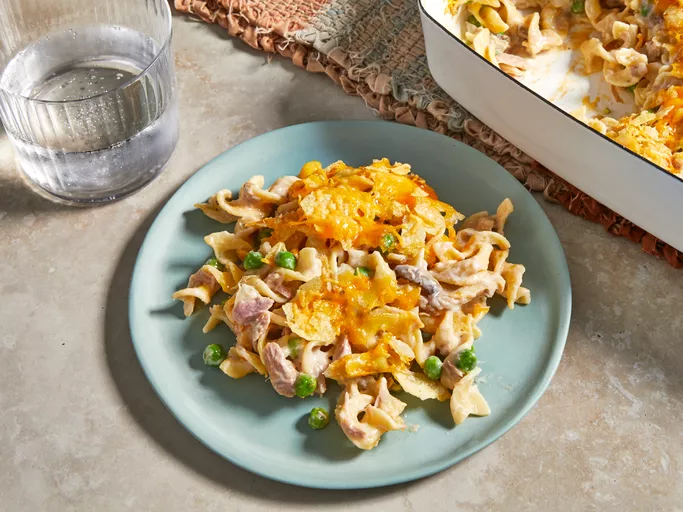

Tuna Casserole
Home

This is a tuna casserole that even my picky family loves! The potato chips give
the casserole a crunchy crust. Try serving with a side of roasted Brussels sprouts.
Ingredients
- 1 (12 ounce) package egg noodles
- 2 (10.5 ounce) cans condensed cream of mushroom soup
- 2 cups shredded Cheddar cheese, divided
- 2 (5 ounce) cans tuna, drained
- 1 cup frozen green peas
- ½ (4.5 ounce) can sliced mushrooms
- ¼ cup chopped onion
- 1 cup crushed potato chips
Steps
- Gather all ingredients.
- Fill a large pot with lightly salted water and bring to a rapid boil. Cook egg noodles at a boil until tender yet firm to the bite, 7 to 9 minutes; drain. Meanwhile, preheat the oven to 425 degrees F (220 degrees C).
- Mix noodles, condensed soup, 1 cup cheese, tuna, peas, mushrooms, and onion in a large bowl until well combined.
- Transfer the mixture into a 9x13-inch baking dish.
- Top the mixture with crushed potato chip and remaining 1 cup of cheese.
- Bake in the preheated oven until cheese is bubbly, about 15 to 20 minutes.
- Serve hot and enjoy!